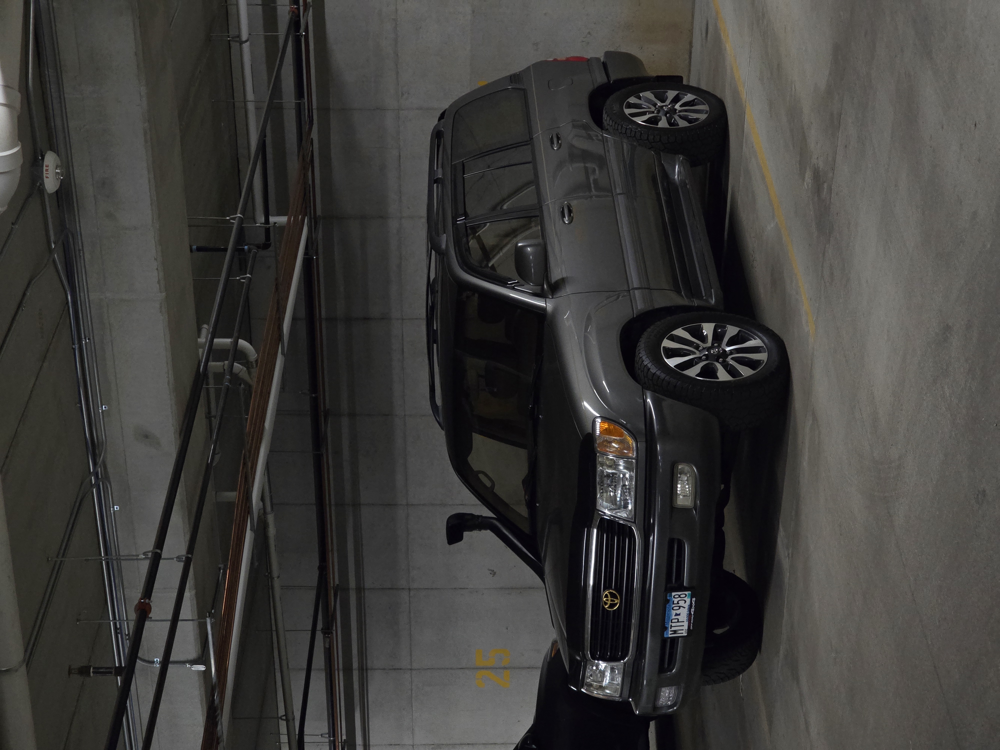
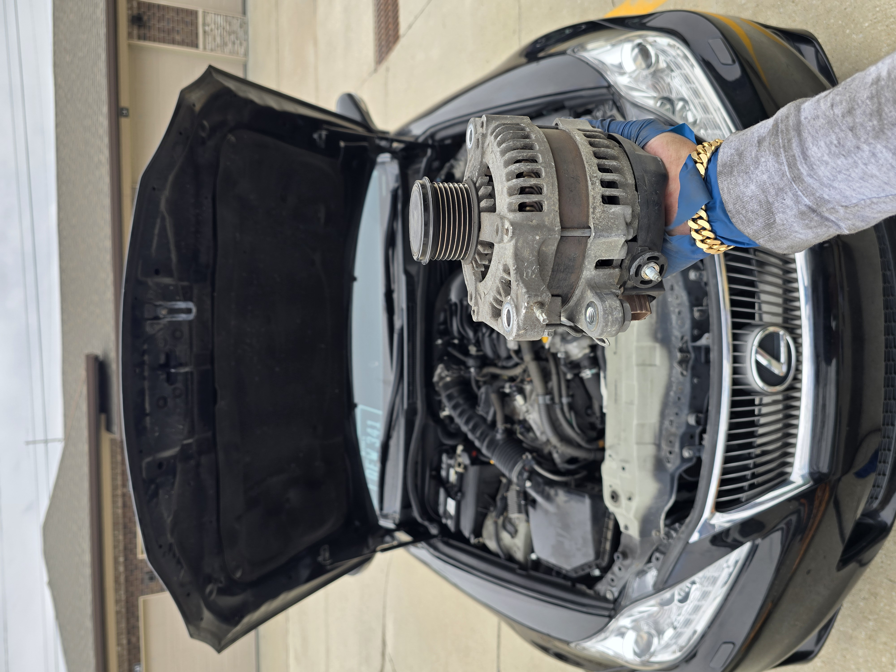
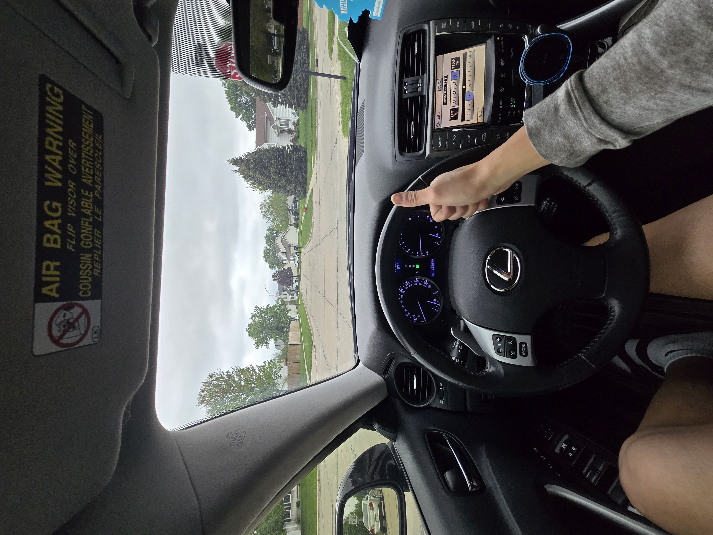

No Winning That Day
Did you remember that 4/18/2025 was the day that I bought snorkel? It was such a good day, I picked up a rare Toyota SUV that was in pristine condition for an absolutely killer price. The journey to mens night, the trip to Rochester to watch the documentary about Face of Jesus. I still have snorkel added on my carfax account, so I get the service updates done to it. As of 6/6/2026, it crossed the 300,000 miles mark. I sold it when it was at 287,000.

Exactly one year after buying it, on April 18th, 2026, things took a major turn. It was supposed to be a great day. It started out like any normal Saturday: woke up, showered, grabbed some breakfast, and cleaned the apartment. The day before, I had seen a Facebook post shouting out a small, local bait shop. It’s run by an 81-year-old guy and his family, but the old fella handles all the daily operations himself. I really wanted to go support him—who doesn't love backing a local family business, especially when it's run by an elderly guy and ties directly into your favorite hobby? The shop was about a 26-minute drive from my apartment. Since it was a pretty nice, cool day, I brought Gibby along for the ride because he loves being in the car. We got so close. We were a little over a mile away from the shop when—boom. This happens.

THE FRIGGIN ALTERNATOR DIES ON ME AND GIBBY!
Like, brother... all my talk about how a Toyota or Lexus will never leave you stranded? Yeah, it just left us stranded right in the middle of an intersection. YES! It died dead in the intersection. Thankfully, the middle of the road was at a high point, so when the power cut, the car slowly rolled forward to the opposite side. I threw it in park and just stood there in disbelief. I called a tow truck, and then called my sister to come save us. She was in the middle of cooking and couldn't leave right away, so after the tow truck took the car, Gibby, myself, and my water bottle walked the rest of the way to the old mans bait shop. It was actually a nice walk. I spent about 30 minutes there chatting with the old man about his life. My sister finally arrived to pick us up, and we headed back. But as soon as I walked into the apartment, I realized I left my FRIGGIN water bottle at the bait shop—which was nearly 30 minutes away!!! Lucky me, I have two cars. I got right into the Tundra and drove all the way back to get it. Thankfully, the truck didn't die... Once I recovered my water bottle, the next stop was Scheels. On my last fishing trip with Milos, I loss my fishing net, must've left it at the stream. Anyways I’ve always used this specific net because it folds up nicely and the holes are small enough to catch bait fish with it. But thanks to FRIGGIN inflation, a net that used to be $30 is now $50! How fun. Speaking of fun, this is actually the third time I’ve had to buy this exact net. The first time, my uncle stepped on it; the second time, I broke it in my kayak; and now this. I was already having a terrible day, and now my favorite net jumped in price. Oh well, I'll live. I finally get back to the apartment and park the Tundra in the garage. I grab all my stuff—except for that FRIGGIN water bottle. Again. Now, it was a super windy day, so I had a hat on with my hoodie up, meaning my peripheral vision was basically zero. I hit the garage door button to close it, turn around, instantly realize I forgot the bottle again, and whip back around. BOOM. I smack my forehead directly into the bottom of the garage door as it’s coming down. My face was dented :(
Monday comes, and I get a call from the shop that towed my car. They tell me that the alternator is no longer with us, and it was going to be $1,100 to get it fixed. They quoted me $750 for an original equipment manufacturer (OEM) alternator and $400 for labor. So when the car died, I had a strong feeling that it was the alternator that failed, and so I looked into it that weekend. A brand new one from Lexus directly is $320 and that same part on Amazon is $250. So I'm a little confused where this gentlemen by the name of Dennis is getting his numbers. Anyways, the price was ridiculous, so I asked them to tow it back to my apartment and I would deal with the alternator myself. So I had to pay double tow, and a diagnostic fee, like yay! Soooo, this is a simple guide on how to replace the alternator on a 2011 Lexus IS350. Step 1, remove the alternator.

Step 2: Put in the new alternator, go for a test drive and give a thumbs up for a job well done.
